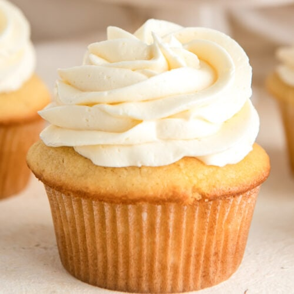

Vanilla Cupcake

Description
Vanilla cupcakes are a beloved classic in the world of baking, known for their light and fluffy texture and rich vanilla flavor. These individual-sized cakes are made from a batter that combines flour, sugar, butter, eggs, and vanilla extract, resulting in a moist and tender crumb. Each cupcake is typically topped with a generous swirl of vanilla buttercream frosting, which adds a creamy sweetness that complements the cake perfectly. Vanilla cupcakes are incredibly versatile and can be decorated with sprinkles, fruits, or other embellishments, making them a popular choice for parties, celebrations, and everyday treats. Their simple yet delicious taste makes them a favorite among both children and adults.
Ingredients
Cupcake Ingredients
- 1 1/2 cups all-purpose flour
- 1 1/2 teaspoons baking powder
- 1/4 teaspoon salt
- 1/2 cup unsalted butter, room temperature
- 1 cup granulated sugar
- 2 large eggs, room temperature
- 2 teaspoons pure vanilla extract
- 1/2 cup whole milk, room temperature
Vanilla Buttercream Ingredients
- 1 cup unsalted butter, room temperature1 cup unsalted butter, room temperature
- 3-4 cups powdered sugar
- 1/4 cup heavy cream
- 1 tablespoon pure vanilla extract
- Pinch of salt
Steps
- Preheat Oven: Preheat your oven to 350°F (175°C) and line a cupcake pan with liners.
- Dry Ingredients: In a bowl, whisk together the flour, baking powder, and salt.
- Cream Butter and Sugar: In a large bowl, beat the butter and sugar until light and fluffy. Add the eggs one at a time, beating well after each addition. Mix in the vanilla extract.
- Combine Wet and Dry Ingredients: Gradually add the dry ingredients to the butter mixture, alternating with the milk, beginning and ending with the dry ingredients. Mix until just combined.
- Bake: Divide the batter evenly among the cupcake liners. Bake for 18-20 minutes, or until a toothpick inserted into the center comes out clean. Cool completely.
- Prepare Buttercream: Beat the butter until creamy. Gradually add powdered sugar, 1 cup at a time, beating well after each addition. Add the heavy cream, vanilla extract, and salt, and beat until light and fluffy.
- Frost Cupcakes: Frost the cooled cupcakes with the vanilla buttercream.